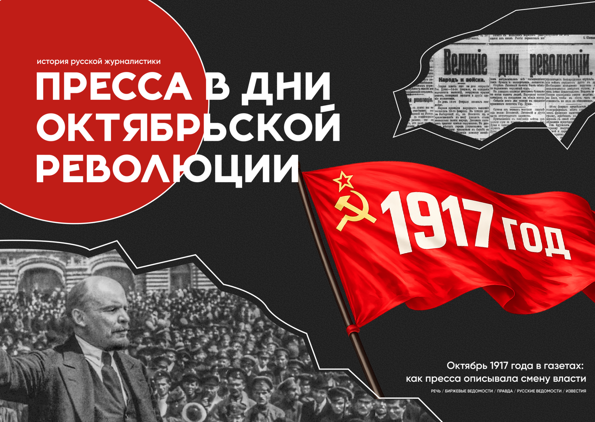

Кризис
Газета фиксирует момент, когда политический процесс ещё не получил окончательного имени.

Газета фиксирует момент, когда политический процесс ещё не получил окончательного имени.
Советская печать быстро закрепляет формулу «победа Октябрьской революции».
Газетная полоса становится местом официального оформления новой власти.
К осени 1917 года Российская республика находилась в состоянии глубокого политического и социального кризиса. После Февральской революции власть перешла к Временному правительству, однако оно не смогло решить ключевые вопросы: о мире, земле и экономической стабилизации.
Продолжение участия России в Первой мировой войне усиливало недовольство населения. В стране росли инфляция, дефицит продовольствия, падала дисциплина в армии. На этом фоне усиливались радикальные партии, прежде всего большевики.
В столице важнейшим центром власти стал Петроградский Совет рабочих и солдатских депутатов, конкурировавший с Временным правительством. Осенью 1917 года при нём был создан Военно-революционный комитет, фактически ставший центром подготовки вооружённого восстания.
В этих условиях пресса перестала быть просто источником новостей. Газеты стали инструментом политической борьбы: они не только сообщали о событиях, но и задавали читателю способ их понимания.
«Правда» была центральным органом большевиков. Газета выражала позицию РСДРП(б) и поддерживала переход власти к Советам. После Февраля 1917 года она стала главным рупором курса на социалистическую революцию.
агитационный / мобилизационный стиль«Известия» были официальным органом Советов. После прихода большевиков к власти стали государственным изданием, публиковавшим декреты и распоряжения новой власти.
официальный / документальный стильЦентральный орган Конституционно-демократической партии. В октябре 1917 года газета занимала антибольшевистскую позицию и защищала Временное правительство.
язык процедуры и отчётаСтарейшая либеральная газета, орган московской профессуры и земства. К 1917 году издание сблизилось с кадетами и стремилось к сохранению порядка.
либеральная интеллигентская рамкаКрупная информационно-коммерческая газета массового типа, ориентированная на деловые и либеральные круги. В дни кризиса её тональность была тревожной.
оперативная хроника / тревога24 октября фиксируется как день нарастающего кризиса и начала вооружённых действий. Это ещё не день оформленного политического результата.
Советская печать фиксирует происходящее как уже состоявшуюся победу и переход власти. Формула «о победе Октябрьской революции» задаёт интерпретацию события.
На первый план выходят декреты, постановления и документы управления. Газета становится пространством, где новая власть предъявляет себя как государство.
Слово тоже оружие
Газетный заголовок становится не только сообщением, но и актом политического утверждения.24 октября 1917 года в газетном корпусе фиксируется как день нарастающего кризиса и начала вооружённых действий. Это ещё не день оформленного политического результата.
В отличие от 25 октября, когда советская печать уже начнёт говорить о «победе Октябрьской революции», 24 октября в газетной номенклатуре ещё нет ни обращений о победе, ни декретов.
В советской части корпуса этот день представлен не через отдельные программные публикации, а ретроспективно, через документы, напечатанные позднее. Прежде всего через «Известия» № 208 от 27 октября, где события 24 октября включаются в общий нарратив перехода власти к Советам.
Либеральная пресса, напротив, фиксирует 24 октября как текущий политический процесс, ещё не получивший завершённой интерпретации. Наиболее точно атрибутированный материал здесь принадлежит газете «Речь»: «24 октября. I. Общее собрание. 3. Отчёт газеты “Речь” об общем собрании», опубликованный в № 251 от 25 октября.
Так возникает важная асимметрия источников. Советская перспектива включает 24 октября в цепь событий, ведущих к победе революции. Либеральная пресса описывает происходящее как текущий политический кризис.
25 октября 1917 года советская печать фиксирует происходящее как уже состоявшуюся победу и переход власти.
Важно учитывать источниковедческую поправку: ключевые тексты о событиях 25–26 октября по старому стилю часто видны не в номерах того же дня, а в ближайших выпусках 27–28 октября.
Главным газетным узлом здесь становятся «Известия» № 208 от 27 октября. В этом выпуске зафиксированы обращения Второго Всероссийского съезда Советов к рабочим, солдатам и крестьянам, а также обращение Петроградского военно-революционного комитета «К гражданам России».
«О победе Октябрьской революции»
Оба названия уже не описывают неопределённый кризис в Петрограде. Они объявляют политический результат как свершившийся факт.
Либеральная пресса 25 октября выглядит иначе. У «Речи» точно установлен не манифест и не декларация, а материал «24 октября. I. Общее собрание. 3. Отчет газеты “Речь” об общем собрании».
Если 25 октября в советской прессе представлен как момент победы, то 26 октября оформляется как день институционализации новой власти.
На первый план выходят уже не только обращения, но и декреты, постановления, документы управления.
В «Известиях» № 208 от 27 октября прямо атрибутированы «Декрет Второго Всероссийского съезда Советов о мире» и «Постановление Второго Всероссийского съезда Советов о немедленном аресте Керенского».
В «Правде» № 170 от 27 октября точно названы обращение «Ко всем железнодорожникам» и постановление о немедленном аресте Керенского. В «Правде» № 171 от 28 октября зафиксированы декреты о земле и об образовании Рабочего и Крестьянского правительства.
Из этой связки видно, как меняется характер публикации: 25 октября советская печать говорит языком воззвания и объявления победы, а 26 октября переходит к языку декрета и организационного оформления власти.
Советская пресса, прежде всего «Правда» и «Известия», описывает события как свершившийся и легитимный переход власти к Советам.
В её языке доминируют слова «победа», «обращение», «декрет», «постановление». Эти формулы не оставляют пространство для сомнения.
«Известия» выступают главным каналом официального оформления новой власти. В № 208 от 27 октября соединяются тексты о победе революции и первые документы новой власти.
«Правда» действует как партийный и мобилизационный орган. Через публикацию декретов и постановлений она закрепляет большевистскую интерпретацию Октября.
Либеральная пресса выглядит иначе. «Речь» не использует язык победы. Её точно зафиксированные публикации оформлены как отчёты об общем собрании.
В революционной ситуации журналисты и редакции оказались вовлечены в политическую трансформацию. Их роль вышла за рамки обычного информирования.
В советской прессе журналистика стала частью политического механизма новой власти. «Правда» и «Известия» публиковали официальные обращения, декреты и постановления II Всероссийского съезда Советов и Военно-революционного комитета.
Газета превращалась в канал, через который власть заявляла о себе, оформляла решения и распространяла их среди населения.
В либеральной прессе роль журналиста остаётся более традиционной. «Речь» фиксирует заседания, обсуждения и политические процедуры.
Советская печать быстрее всех дала происходящему чёткое название: «победа Октябрьской революции». Затем она почти сразу перешла к языку декретов и постановлений, то есть к оформлению новой власти.
Либеральная пресса не приняла этот язык. Главное различие заключалось не только в политической оценке, но и в самом способе описания событий.